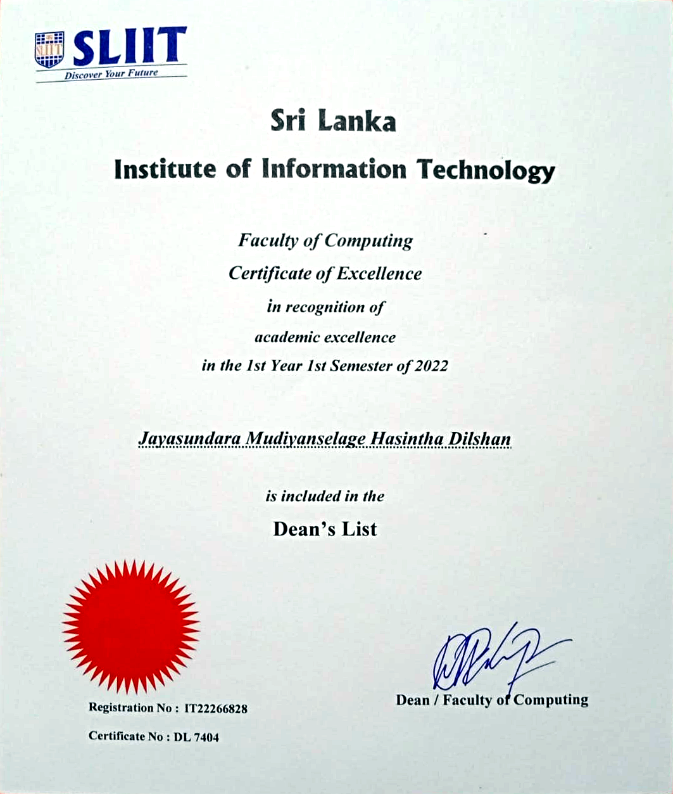
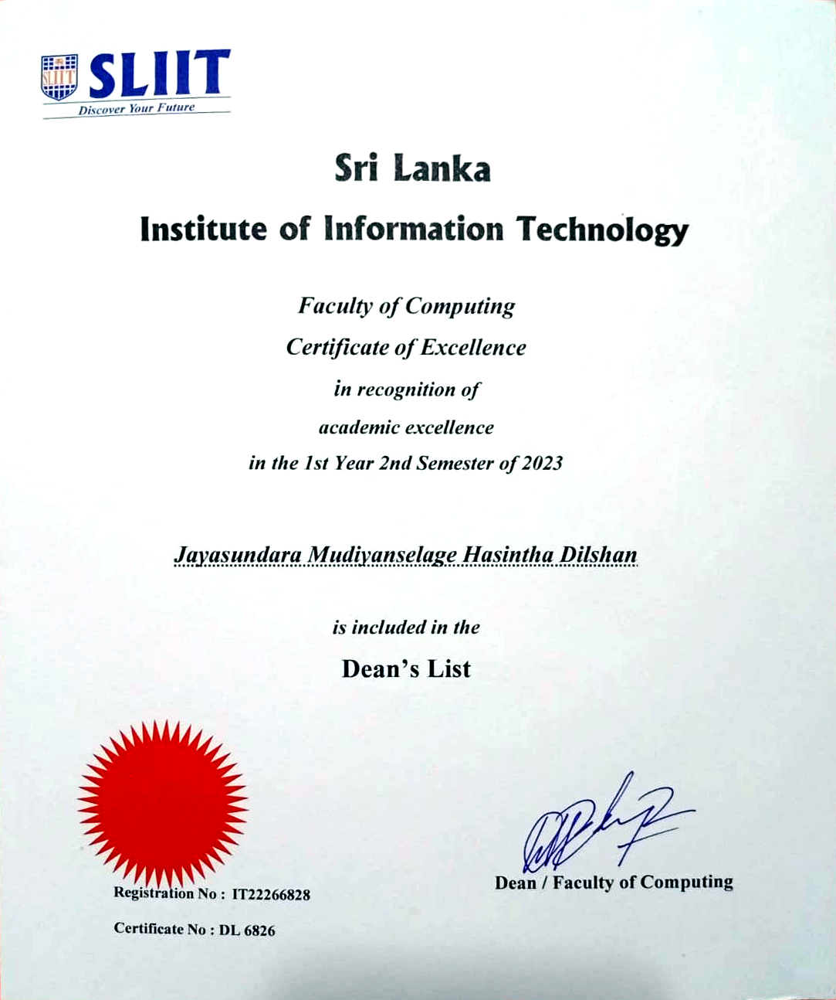
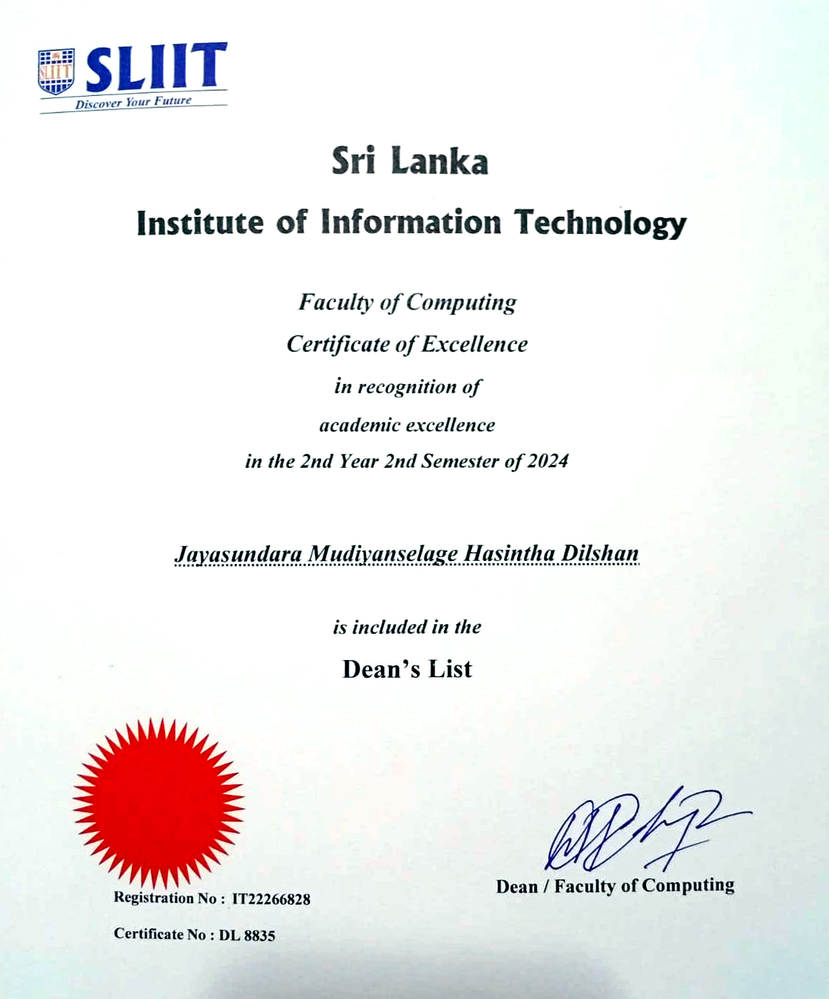

Associate Software Engineer | Software Engineering Undergraduate | Badminton Player and Umpire
I am a software engineering undergraduate at SLIIT and an Associate Software Engineer currently working at Entgra.
My journey combines software development, professional communication, sports discipline, and continuous learning.
This portfolio reflects my academic progress, professional growth, module learning, career direction, CV highlights,
certifications, and personal achievements.
01
My Timeline
2021
Badminton Coaching Certification
Obtained Sri Lanka Badminton Level 1 coaching certification and Shuttle Time teaching exposure.
2022
Completed Advanced Level Mathematics Stream
Completed A/Ls in the mathematics stream, building the analytical foundation for software engineering.
2022
Started at SLIIT
Joined SLIIT to follow BSc (Hons) in IT specialising in Software Engineering.
December 2023
Sri Lanka Badminton Probationary Umpire
Became a probationary umpire, improving discipline, decision-making, and confidence under pressure.
January 2025
Software Engineering Intern at CodeGen International
Entered the industry through internship work across full-stack development, AI-powered solutions, and hardware integration.
July 2025
Associate Software Engineer at CodeGen International
Moved into an associate role, contributing to research and development, client-facing work, and enterprise software delivery.
February 2026
Associate Software Engineer at Entgra
Moved from a large enterprise environment to a middle-scale company to explore new horizons in IoT, backend systems, and device communication.
02
My Skills and Tech Stack
Backend
Java
Spring Boot
Go
REST APIs
WSO2
Frontend
React
Next.js
JavaScript
HTML
CSS
Systems
IoT
Arduino
C++
Docker
Kubernetes
AI and Research
Python
Agentic AI
LSTM
Deep Learning
Behavior Analytics
03
What I Learned from the Module Content
Business Writing
This module improved my ability to write professional documents such as proposals, memos, and executive summaries. I learned how to organize ideas logically, use a professional tone, and format documents for formal business contexts.
Letter Writing
I learned the structure and tone required for formal business letters, cover letters, and resignation letters. This helped me write professional correspondence with clarity and purpose.
Interview Techniques
I learned how to use the STAR method to answer behavioral interview questions. This helped me structure answers clearly and improved my confidence during interviews.
Non-verbal Communication
This unit made me more aware of body language in professional settings. Posture, eye contact, facial expressions, and gestures all influence how confidence and professionalism are communicated.
Language for Presentations
The module improved my public speaking skills by teaching me how to present complex topics clearly, use visual aids effectively, and maintain audience engagement.
Personal Reflection
I became more aware of how I communicate in professional environments. The module supported my internship, group projects, writing tasks, and presentation confidence.
04
Career Plan
Short Term
After completing my final exams, my goal is to become stronger as a software engineer and successfully deliver the current project I own at Entgra.
Mid Term
I hope to begin visiting lecturing because I enjoy teaching and sharing knowledge, while also keeping one foot in the software industry.
Long Term
My long-term plan is to grow my own business and build something of my own through the experience I gain in software, leadership, and professional communication.
05
Integrated CV
Hasintha Dilshan
Associate Software Engineer focused on Java backend systems, IoT device communication, AI-assisted workflows, and full-stack software delivery.
3.59Cumulative GPA
3Dean's List Awards
2026Current ASE Role
Malabe, Colombo, Sri Lanka
jmhdilsha@gmail.com
+94 70 555 9052
github.com/H4S1NTH4
linkedin.com/in/hasintha-dilshan-ab60a8287
Professional Experience
February 2026 - Present
Associate Software Engineer | Entgra
Work on Java-based backend systems for IoT device communication protocols.
Contribute to WSO2 service stack work for electrical meter communication and billing automation.
Develop reliability, troubleshooting, and platform engineering skills in a production environment.
July 2025 - February 2026
Associate Software Engineer | CodeGen International
Worked in Research and Development across client delivery and internal research projects.
Built solutions using Java, Python, JavaScript, React, and AI-assisted application workflows.
Contributed to AI-powered ERP, agentic solutions, client communication, and sales management work.
January 2025 - July 2025
Software Engineering Intern | CodeGen International
Worked across the lifecycle of an AI-powered smart kiosk for One World Duty-Free.
Contributed full-stack development and software-hardware integration work.
Participated in live client meetings, technical updates, and collaborative delivery tasks.
December 2023 - Present
Badminton Umpire | Sri Lanka Badminton
Work as a probationary level umpire at Sri Lanka Badminton tournaments.
2019 - Present
Badminton Coach
Sri Lanka Badminton Level 1 certified coach with Shuttle Time teaching exposure.
Selected Projects
AI Agentic Development: Flight booking and hotel reservation agents using Python and LLM orchestration.
Automated Hydroponic Fodder System: IoT watering, greenhouse control, sensor dashboards, and backup handling.
Dairy Farm Management System: MERN and IoT platform for production, monitoring, inventory, and smart storage.
Food Delivery Microservices: Spring Boot, Next.js, Docker, Kubernetes, OpenFeign, and CI/CD practice.
SLIIT IEEE Computer Society Website: React, Java, and Firebase contribution as a web development team member.
Online Baby Care Shop: Java Servlets, JavaScript, HTML, CSS, CRUD features, and admin permission management.
Ongoing Research: Student grading system with IDE behavior tracking and continuous authorization using keystroke dynamics.
Extracurricular Activities
Badminton player - CodeGen Badminton Team
IEEE Web Development Team member, SLIIT, 2023-2024
Prefect - Badulla Central College / Dharmadutha College
References
Prof. Anuradha Jayakody - Head of Department of Computer Systems Engineering, Associate Professor, Faculty of Computing, SLIIT.
Professional growth at CodeGen International.Farewell moment with the CodeGen team.
06
Certifications and Awards
Highlights
Dean's List Awards x 3
Badminton coaching certification
Mercantile Badminton runners-up at CodeGen
SLIIT Rotaract badminton men's doubles champions with my partner Thilina from the Engineering Faculty

Dean's List Certificate - Year 1 Semester 1.

Dean's List Certificate - Year 1 Semester 2.

Dean's List Certificate - Year 2 Semester 2.Rotaract badminton tournament certificate.Mercantile Badminton runners-up with CodeGen.Rotaract badminton doubles champions with Thilina.
Thank You
This portfolio represents my preparation for the professional world through academic learning,
workplace experience, communication development, and personal achievements.

.png)